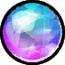
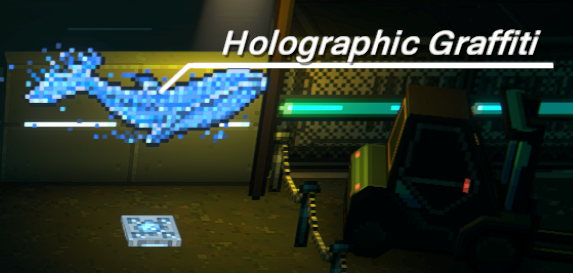
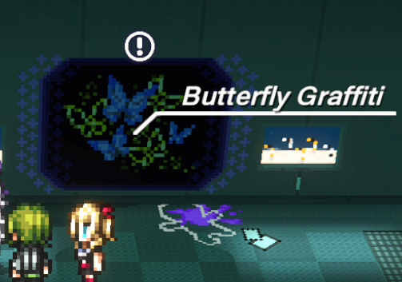
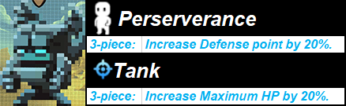
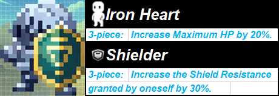

Click on the “holograms” tab for the full list.
Each hologram rewards the player 50  enigmatic entities.







Current sets as of OBT:






As the developers have said, the game offers the freedom of playing however the player prefers, hence depending on preferences one could run an attack set on Kazuki or Hyakuichitaro.
Innovative |
Tech |
Accurate |
|---|---|---|
| Tsuruko | Enoki | Koishi |
| Saigo | Jio | Yo |
| Gotanda | Miu | Tsuki |
| Kazuki | Oi | Hyakuichitaro |
| Q | Eiji |
Click on the “enemies” tab for the full list & amp; fast access.
Attacks listed under “tension EX” are additions exclusive to EX mode, exceptions will be noted.
Outside of EX mode will fall over after an attack.
Lunge

Spin

Tension EX: Lunge & amp; Spin

Will only do this attack in EX mode.
Laser Attack

Tension EX: Triple Lasers

Will only do this attack in EX mode.
Triple Orbs

Tension EX: Bullet Hell

Will only do this attack in EX mode.
Hammer Slam
Tension EX: Triple Spin

Charge

Gas (Fart)

Tension EX: Jump

Will only use the Gas and Jump attacks. Does not use the Charge attack.
Kick

Bat Swing

Tension EX: Triple Swing

Will only do this attack in EX mode.
Shield Bash

Bat Swing

Tension EX: Double Shield Bash

Will only do this attack in EX mode.
Double Swing

Tension EX: Standalone Jump

Double Swing & Jump

Charge

Bump

Attacks in tension EX do not change
Jump + Zyzz posing ✨


Spin

If this attack is deflected, all consecutive spin attacks will be followed by a jump.

Tension EX: Single Jumps become Triple Jumps.
Triple Jump

Double Attack

Triple Combo

½ + Ground Slam

Sometimes Endrone might do the ground slam twice. It may be due to deflecting his double attack earlier inthe fight(?). The attack can be identified by Endrone skipping the second swing.
Swing & gt;(skip) & gt;ground slam & gt;ground slam
Rockets

Signified by the boss sliding backwards.
Tension EX: Blade Spin + Rockets + Ground Slam

Triple Bite

Tail Swipe

Water Laser

Signified by the boss swimming backwards. The hitbox of the water orb is a bit bigger than it looks.
Fin Attack

It is possible to get hit by the water circles.
Tornado Bombs
The charge can be dodged\deflected.


Double Dive
A new attack that first happens at 3 health bars


If the dive out is deflected, the boss doesn’t stagger, so the second attack will still need to be dodged\deflected.

Tension EX: Whirlpool
Does this attack as soon as the EX mode starts. The water circles last for the entirety of the EX mode’s duration.

If the player stands inside the whirlpool, there’s a small chance to get damaged & amp; get knocked down.
Water Tornado
This entire sequence lasts for the ~¾ths of the EX mode’s duration.

At 3 health bars
It is strongly advised to use the Ace Vision tension card for this fight.
Standalone Crane Spin

360° Spin
Left, Right,Jump
The jump is a targeted attack, so running away from the spot where the boss jumped up won’t avoid it.
Rocket Shot + Crane Spin
Signified by the boss sliding backwards. The rocket will have a circle glow. It will glow 2 times, on the 3rd one - dodge.
<>Tension EX: Aerial Strike

Does this as soon as it enters EX mode. The aerial attacks will last until the end of EX mode.
Aerial Strike dodge timing

The zones will flash yellow twice, dodge ~0.3 seconds after
Triple Rocket Shot + Crane Spin

Does 3 rocket shots instead of 1 in EX mode. It’s possible to outrun the shots by sprinting.
Good luck and have fun.